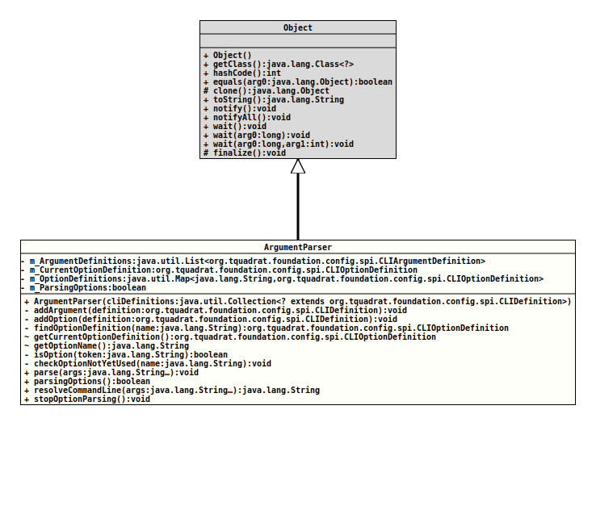

Class ArgumentParser
java.lang.Object
org.tquadrat.foundation.config.internal.ArgumentParser
@ClassVersion(sourceVersion="$Id: ArgumentParser.java 1061 2023-09-25 16:32:43Z tquadrat $")
@API(status=INTERNAL,
since="0.0.1")
public class ArgumentParser
extends Object
The parser for the command line arguments.
- Author:
- Thomas Thrien (thomas.thrien@tquadrat.org)
- Version:
- $Id: ArgumentParser.java 1061 2023-09-25 16:32:43Z tquadrat $
- Since:
- 0.0.1
- UML Diagram
-

UML Diagram for "org.tquadrat.foundation.config.internal.ArgumentParser"
{kind=link}
-
Nested Class Summary
Nested ClassesModifier and TypeClassDescriptionprivate final classThis class is essentially a pointer over theStringarray with the command line arguments. -
Field Summary
FieldsModifier and TypeFieldDescriptionprivate final List<CLIArgumentDefinition> TheCLIDefinitioninstances for arguments.private CLIOptionDefinitionThe definition for the current command line entry.private final Map<String, CLIOptionDefinition> TheCLIDefinitioninstances for options.private booleantrue(the default) if options has to be parsed. -
Constructor Summary
ConstructorsConstructorDescriptionArgumentParser(Collection<? extends CLIDefinition> cliDefinitions) Creates a newArgumentParserinstance. -
Method Summary
Modifier and TypeMethodDescriptionprivate final voidaddArgument(CLIDefinition definition) Adds an argument definition to the registry for arguments.private final voidaddOption(CLIDefinition definition) Adds an option definition to the registry for options.private final voidcheckOptionNotYetUsed(String name) Checks the command line definition whether the given name is not yet used, either as a name or an alias.private final CLIOptionDefinitionfindOptionDefinition(String name) Finds an option definition by the given option name.(package private) final CLIOptionDefinitionReturns the current CLI option definition.(package private) final StringReturns the name of the option that is being processed currently.private final booleanChecks if the given token is an option (as opposed to an argument).final voidParses the given command line arguments and sets the retrieved values to the configuration bean.final booleanReturnstrueif thisArgumentParserwill parse options.final StringresolveCommandLine(String... args) Resolves the given command line.final voidStops the parsing for options.
-
Field Details
-
m_ArgumentDefinitions
TheCLIDefinitioninstances for arguments. -
m_CurrentOptionDefinition
The definition for the current command line entry. -
m_OptionDefinitions
TheCLIDefinitioninstances for options. -
m_ParsingOptions
true(the default) if options has to be parsed. If set tofalse, only arguments are parsed.- See Also:
-
-
Constructor Details
-
ArgumentParser
Creates a newArgumentParserinstance.- Parameters:
cliDefinitions- The definition for the command line options and arguments from the configuration bean specification.
-
-
Method Details
-
addArgument
Adds an argument definition to the registry for arguments.- Parameters:
definition- The argument definition to add.
-
addOption
Adds an option definition to the registry for options.- Parameters:
definition- The option definition to add.
-
findOptionDefinition
Finds an option definition by the given option name.- Parameters:
name- The option name.- Returns:
- The option definition.
- Throws:
CmdLineException- There is no option definition for the given option name.
-
getCurrentOptionDefinition
Returns the current CLI option definition.- Returns:
- The current CLI option definition.
-
getOptionName
Returns the name of the option that is being processed currently.- Returns:
- The name of the current option.
-
isOption
Checks if the given token is an option (as opposed to an argument). Option tokens will have a hyphen ("-") as their first character.- Parameters:
token- The token to test.- Returns:
trueif the given token is an option,falseif it is an argument, or if no (more) options are expected at all.- See Also:
-
checkOptionNotYetUsed
Checks the command line definition whether the given name is not yet used, either as a name or an alias.- Parameters:
name- The name to check.- Throws:
IllegalArgumentException- The given name is already in use.
-
parse
Parses the given command line arguments and sets the retrieved values to the configuration bean.- Parameters:
args- The command line arguments to parse.- Throws:
CmdLineException- An error occurred while parsing the arguments or a mandatory option or argument is missing on the command line.
-
parsingOptions
Returnstrueif thisArgumentParserwill parse options. This can be set tofalseeither when no@Optionannotation was found on the configuration bean specification interface, when the stop token ("--") was encountered on the command line, or whenstopOptionParsing()was called manually.- Returns:
truewhen options are parsed,falseif not.- See Also:
-
resolveCommandLine
Resolves the given command line.
The method is mainly meant for test and debugging purposes.
- Parameters:
args- The command line arguments.- Returns:
- The resolved command line as a single String.
-
stopOptionParsing
Stops the parsing for options. After the call, the argument list will be parsed only for arguments.
-